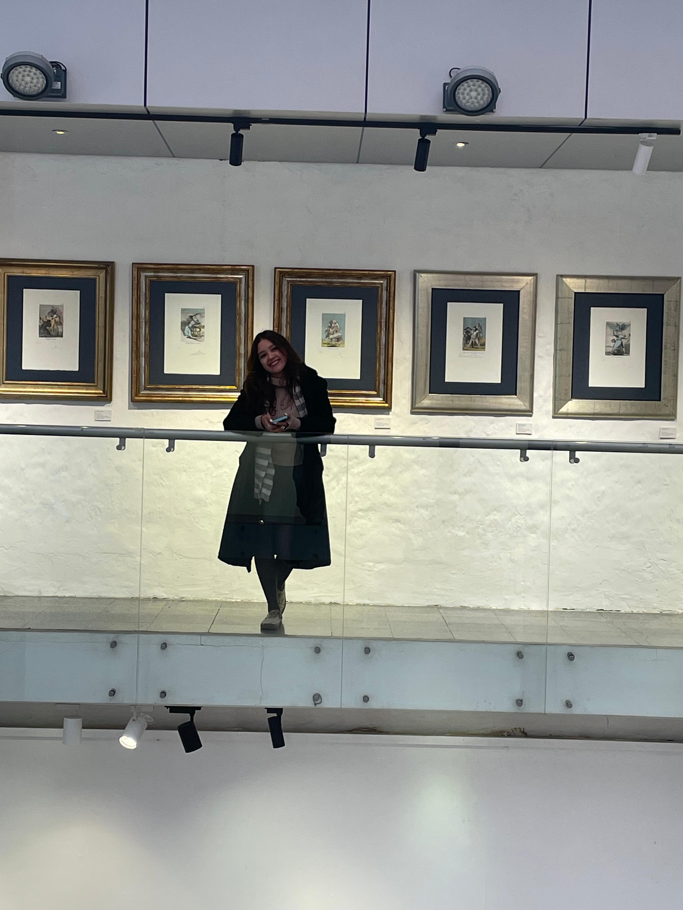
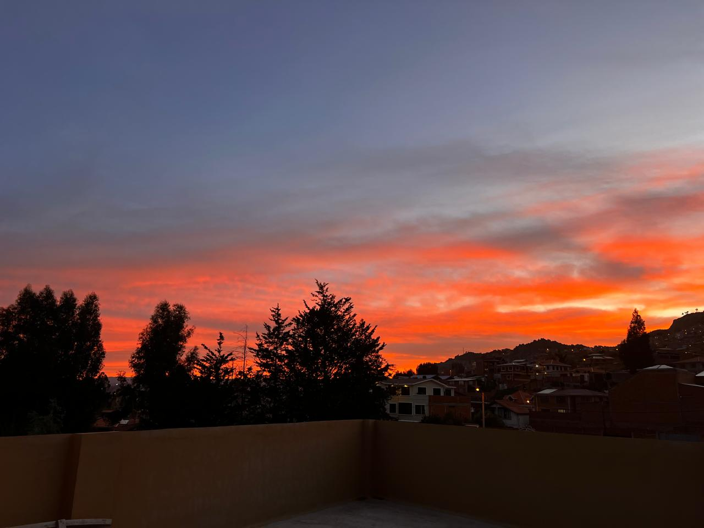

Sobre mí
Mi nombre es Carla pero la mayoría me suele decir Kai. Soy Diseñadora Digital, me gusta pintar y hacer pilates como terapia, me interesa conocer acerca de diferentes temas, también me gusta cantar y me gustaría viajar por todo el mundo.
Algo que considero importante recalcar en mí es que soy una persona responsable, con empatía y cuando me cuestionan algo interesante me encanta indagar en mis propios pensamientos y en las diferentes perspectivas de los demás.
Gustos e intereses
- Me gusta pintar más que dibujar.
- Me encanta cantar, es uno de mis hobbies favoritos.
- Me gusta mucho apreciar los pequeños momentos y los pequeños detalles, amo de una manera indescriptible el cielo y me encanta verlo en todas sus maneras.
- Me interesa bastante el mundo de las emociones y el expresionismo mediante el arte.
Algo que me inspira

El cielo y la interpretacion del ser humano
Me inspira profundamente contemplar el cielo en sus diferentes formas, colores y todo lo que conlleva a lo largo del día. Para mí el cielo es algo tan abstracto que es libre de interpretarse de millones de maneras, yo interpreto el cielo como mi lugar seguro en el cual se encuentra la calma y la inmensidad de mis emociones. Me hace sentir una conexion que no es con otro ser vivo lo cual refleja mi interes por el arte de expresar e interpretar los diferentes fenomenos que a uno lo hace sentir bien, donde no solo se pueda representar lo que vemos si no lo que sentimos.